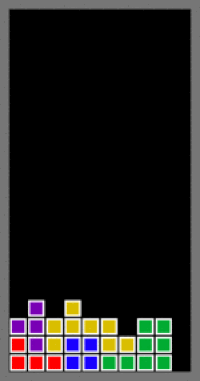

Construir con intención
Desarrollo de productos con React, Spring Boot, microservicios y Python; soluciones de IA y foco en rendimiento y escala.
Un recorrido interactivo por Clarolab. Acercate a la puerta, a los paisajes o a la mascota y descubrí cómo el equipo crea, prueba y protege software.
Recorrer
Acercate a cualquier imagen de la puerta, la mascota o los paisajes. Todas activan el mismo recorrido.
Permití el uso de la cámara. Cualquier imagen de la puerta, la mascota o los paisajes activa el mismo recorrido. Necesitás HTTPS o localhost.
Clarolab acompaña a sus aliados a desarrollar y probar productos de software. Las imágenes activan el recorrido completo: cinco paradas para conocer ese trabajo.
Desarrollo de productos con React, Spring Boot, microservicios y Python; soluciones de IA y foco en rendimiento y escala.
Pruebas automatizadas y manuales, integración y entrega continua, análisis de rendimiento y triage.
Análisis estático y dinámico, detección de vulnerabilidades y acompañamiento en prácticas de seguridad.
Un laboratorio para probar tecnologías, formar ingenieros y transferir resultados de I+D a los aliados.
Conocer cada producto y trabajar codo a codo con sus equipos para crecer en experiencia y conocimiento.
La mascota te acompaña mientras avanzás. Cada parada abre una nueva parte del recorrido.
